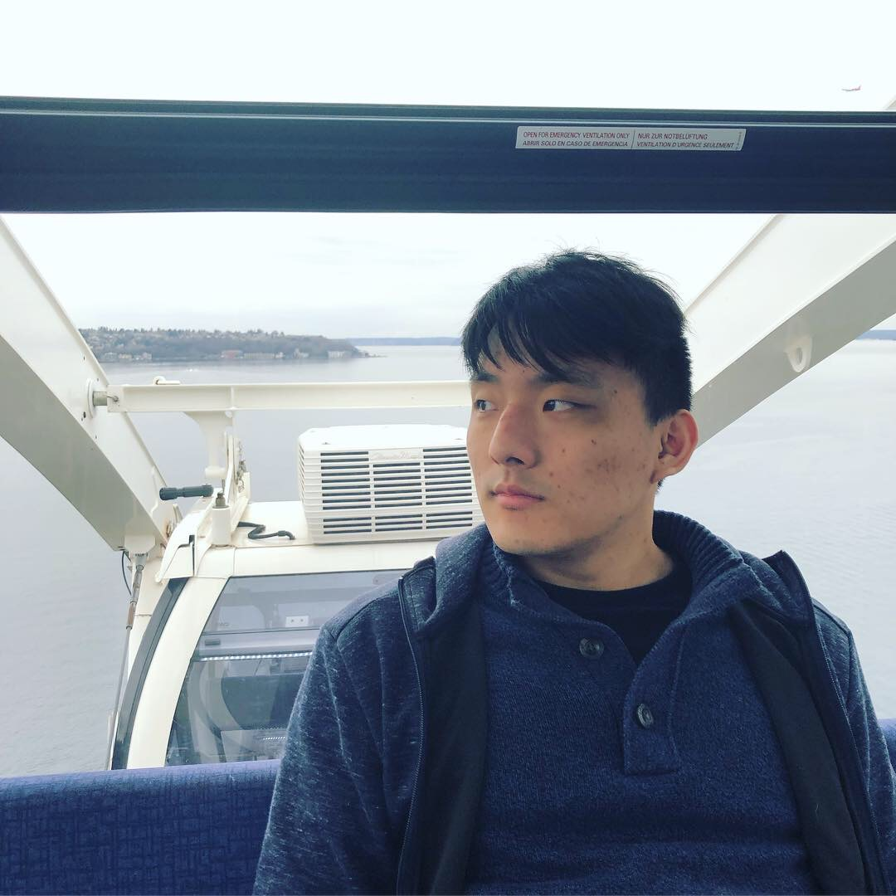

hello, i'm will and i build ai products for a startup in the bay area.
i grew up in auckland, new zealand and moved to arizona when i was seven. i studied economics and mathematics for my undergrad, and will be graduating with a master's degree in artificial intelligence from northwestern in december.
outside of work, you'll find me with my dogs taro and mika. i also enjoy playing video games with friends and producing electronic music.